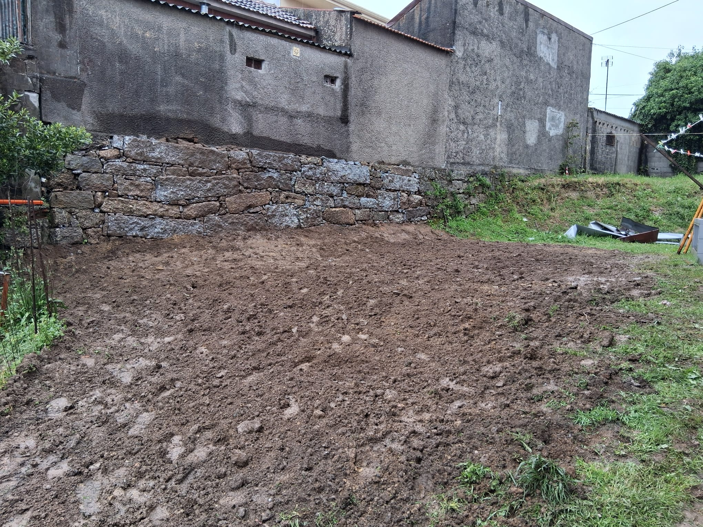
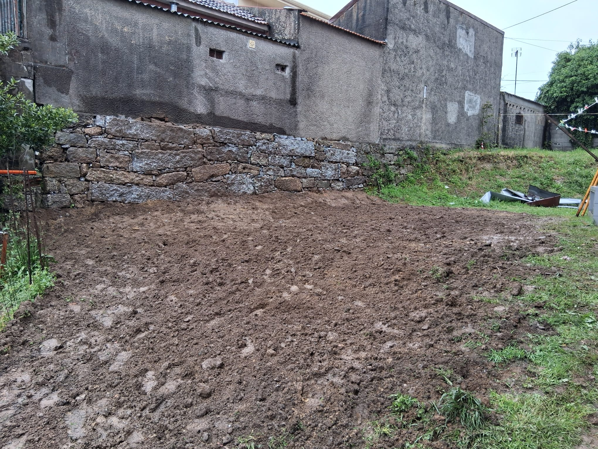
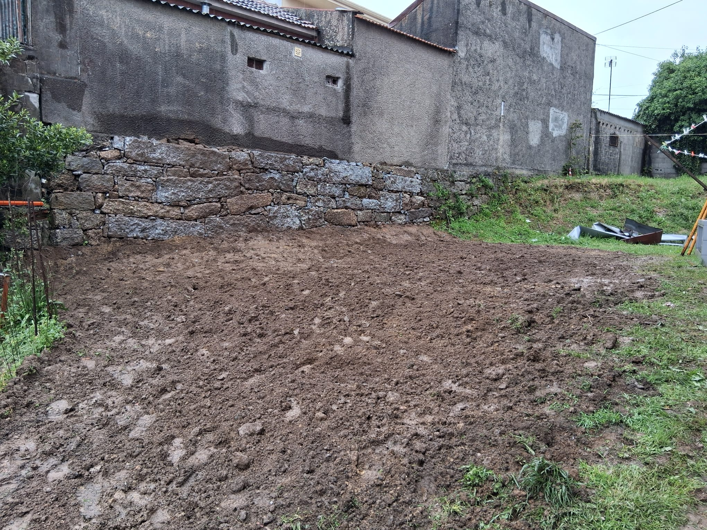

Galeria
 



Com sede em Guimarães, a Motivo Rústico dedica-se à construção de muros em pedra, terraplanagens e limpezas de terrenos. Trabalhamos com dedicação, respeito pela terra e paixão por fazer bem feito. A nossa missão é simples: transformar espaços com qualidade, honestidade e um toque rústico que se sente em cada detalhe.
A Motivo Rústico nasceu das mãos de Nelson Silva, mais conhecido por Nelson Carneiro, um homem profundamente ligado à terra, ao mundo rural e às tradições. Desde pequeno que as máquinas o fascinavam — o barulho dos motores, o cheiro da terra, o trabalho físico — tudo isso foi moldando um espírito determinado e apaixonado por aquilo que faz.
Homem de família e de valores sólidos, Nelson cresceu com o exemplo do seu avô, uma das grandes inspirações da sua vida. Foi ele quem lhe incutiu o gosto pela criação de gado, o respeito pela natureza e a importância de trabalhar com honestidade.
Hoje, essa mesma paixão reflete-se em cada projeto. Muros bem assentes, terrenos limpos, nivelados com precisão e dedicação — são mais do que trabalhos: são compromissos de confiança.
Preparação e nivelamento de terrenos com precisão para todo o tipo de projetos de construção.
Remoção de vegetação e limpeza florestal para manter os terrenos seguros e preparados para uso.
Construção de muros rústicos e resistentes, com acabamento tradicional e duradouro.

Nelson Silva (Carneiro)
Guimarães, com possibilidade de atuação noutras zonas mediante planeamento.
Tem dúvidas, precisa de um orçamento ou quer saber mais sobre os nossos serviços?
Não hesite — ligue para nós ou, se preferir, envie-nos um email. Teremos todo o gosto em responder com brevidade.
Email direto: Ct.motivoRustico@gmail.com
 Fale Connosco
Fale Connosco